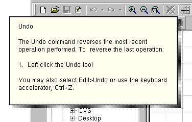

The QWhatsThis class provides a simple description of any widget, e.g. answering the question "what's this?" More...
#include <qwhatsthis.h>
What's This help lies between tool tips and fully-blown online help systems:
QWhatsThis, then, offers a single window with a single explanatory text, which pops up quickly when the user asks "what's this?", and goes away as soon as the user does something else. There are two ways to make QWhatsThis pop up: Click a "What's This?" button and then click on some other widget to get help for that other widget, or press Shift-F1 to get help for the widget that has keyboard focus.
QWhatsThis provides functions to add() and remove() What's This help for a widget, and it provides a function to create a What's This button suitable for typical tool bars.

More functionality will be provided in the coming releases of Qt.
See also: QToolTip.
[static]Adds text as What's This help for widget, with title line title and icon icon. If deepCopy is TRUE, QWhatsThis makes a deep copy of title and text; if it is FALSE QWhatsThis just copies the pointers.
[static]Adds text as What's This help for widget. If deepCopy is TRUE, QWhatsThis makes a deep copy of the string; if it is FALSE QWhatsThis just copies the pointer text.
Examples: application/application.cpp
[static]Removes the What's This help for widget.
See also: add().
[static]Returns the text (not the title) for widget, or 0 if there isn't any What's This help for widget.
See also: add().
[static]Returns a pointer to a specially configured QToolButton, suitable for use to enter What's This mode.
See also: QToolButton.
Search the documentation, FAQ, qt-interest archive and more (uses
www.troll.no):
This file is part of the Qt toolkit, copyright © 1995-99 Troll Tech, all rights reserved.
It was generated from the following files:
| Copyright © 1999 Troll Tech | Trademarks | Qt version 1.45
|